PC-Weather
背景
- 应用背景： 自动驾驶感知模型主要依赖晴天数据训练，但雨、雪、雾、沙尘等恶劣天气会改变能见度、照明、道路反射、植被状态以及车辆与行人的局部外观。真实恶劣天气数据采集和标注成本高、风险大，因此，将晴天街景转换成结构可信、标签仍可复用的恶劣天气图像，是构建鲁棒感知系统的重要路径。
- 现有方法的局限： GAN、天气专用扩散模型、视频或 3D/4D 天气系统通常需要额外天气数据、模型训练、适配器或场景重建。通用免训练编辑器虽然能直接处理单张图像，但仅依靠源 RGB 图像和一条全局天气指令，很难同时实现强天气效果、材质身份保持和安全关键结构稳定。
- 核心矛盾： 天气编辑并非整幅图的统一风格迁移。道路几何和车道线应保持不变，但路面反射或积雪需要改变；车辆的类别、数量、位置和形状应保留，但其照明、表面状态和可见度需要适应目标天气。因此，它本质上是一个空间非均匀的“保留—重建”平衡问题。
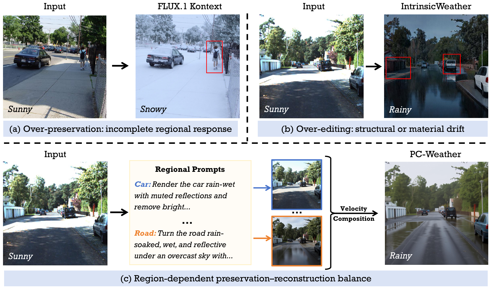
问题
PC-Weather 将天气编辑中的困难归纳为两个相互耦合的歧义：
- 保留参考的歧义： 源 RGB 图像把材质反射与原天气照明混合在一起。若直接用源图强约束内容，模型可能把晴天阴影、强光等过时天气线索一起保留；若减弱约束，车辆颜色、材质身份和结构边界又容易漂移。
- 全局指令的歧义： “把天气变成下雪/下雨”只规定整体目标，没有说明道路、车辆、行人、植被、建筑和天空各自应如何响应。统一强度的全局改写会让部分区域欠编辑、另一些区域过编辑。
典型失败表现为：FLUX.1 Kontext 可以生成完整雪景，但行人仍保持明显的晴天外观；IntrinsicWeather 能生成强烈雨景，却可能改变车辆身份、建筑外观或道路结构。PC-Weather 的目标是在不改变安全关键几何和物体身份的前提下，让各语义区域产生不同类型、不同强度的天气响应。
Insight
- 用反照率辅助材质保留。 反照率不被视为精确物理真值，而是一种相对减少光照影响的软参考，用来稳定材质颜色和结构边界。
- 用区域条件表达天气的异质响应。 道路与车辆属于几何敏感区域，应重点改变表面、反射和照明并保留形状；天空与植被属于天气敏感区域，可以允许更强的外观或状态变化。
- 在速度空间组合局部变化。 全局分支提供统一、稳定的场景运输方向；每个区域分支只能以“相对全局速度的残差”影响自身语义掩码内的 token，不能独立演化成另一张图。
方法
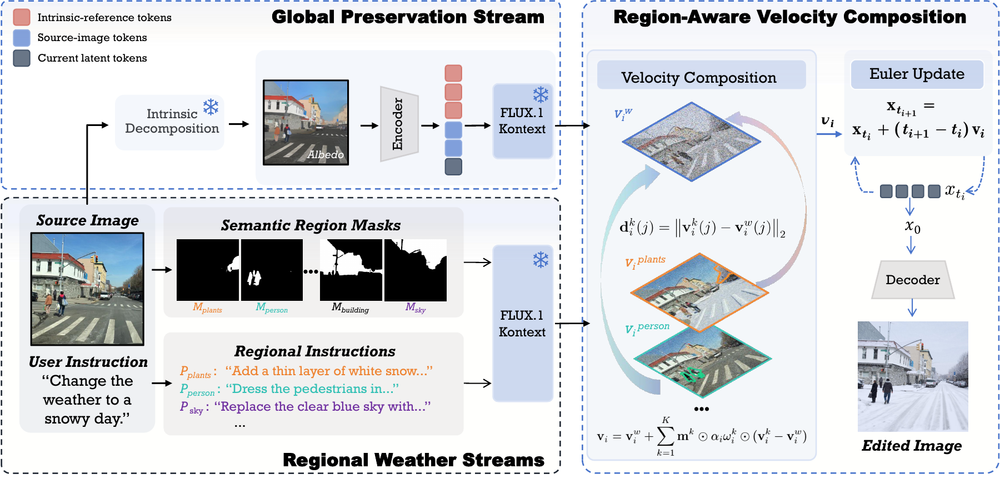
PC-Weather 建立在冻结的 FLUX.1 Kontext 上，只改变每一步采样采用的瞬时速度，不修改模型参数、噪声日程或 ODE 求解器。整体由三个部分组成。
1. Intrinsic Anchoring：全局内在属性锚定
- 使用冻结的 Marigold-IID-Appearance 从源图 估计反照率图 。
- 将源图编码为源图 token ，将反照率图编码为独立参考 token ，并通过不同的位置标识保持二者角色分离。
- 全局分支同时接收源图、反照率参考与全局天气指令，预测全局参考速度 。反照率仅进入全局分支，避免过强的保留先验压制局部天气生成。
这一设计把“原图中有什么”和“原天气如何照亮它”部分解耦，使全局轨迹能够稳定物体身份、材质颜色和结构边界，同时为目标天气照明留出空间。
2. Regional Instruction Refinement：区域指令细化
- 使用 Qwen3 将全局天气指令 与语义类别 组合，生成区域指令 。例如，下雨时道路需要湿润、反光，车辆需要降低高光但不能改变颜色和形状。
- 使用冻结的 Mask2Former 生成语义标签图，并为道路、车辆、行人、植被、建筑、天空等类别构造二值掩码 。
- 区域分支保留源图上下文，但不接收反照率 token，从而可以表达比全局分支更强的类别相关变化。
3. Region-Aware Velocity Composition：区域感知速度组合
在与全局分支相同的隐状态和时间步上计算第 个区域的局部速度 ，并将局部条件引起的变化表示为：
随后根据 token 级速度差异 生成平滑门控 ，最终组合速度为：
语义掩码保证区域外的速度严格等于全局速度；编辑系数 控制整体局部强度；差异门控避免整个掩码使用同一修正强度而形成突兀边界。所有局部效果都围绕一条全局锚定轨迹产生，不会形成彼此失配的独立区域轨迹。
实验
1. 实验设置与评价口径
- 数据： 从 STREET-6K、BDD100K 和 Cityscapes 随机抽取共 492 张真实街景图像。
- 对比方法： InstructPix2Pix、RGB↔X、FLUX.1 Kontext、ICEdit、IntrinsicWeather。
- 自动评价： 使用 Qwen3-VL-Plus 按 0–10 分评价 Success（目标天气实现程度）、Overedit（源场景与物体身份保留）和 Realism（照片真实感、物理一致性与伪影抑制）；另以 PickScore 衡量人类偏好对齐的视觉质量。
- 评价原则： 天气迁移会主动改变亮度、色调和大气状态，PSNR、SSIM、LPIPS 容易把合理的跨天气变化误判为重建误差，因此不作为主排名指标。
2. 与主流编辑方法的比较

- 雪天： 多数方法要么保留晴天阴影和植被状态，要么改变车辆颜色；PC-Weather 能同时处理道路、植被、车辆和行人的冬季响应，并保持布局与车辆身份。
- 雨天： 部分强编辑方法虽然雨势明显，却破坏车辆与街景结构；PC-Weather 同时生成降雨、湿路面和空间一致的反射，并保留车辆、建筑和道路几何。
- 雾天： PC-Weather 产生随深度变化的能见度衰减，而不是叠加均匀灰幕；远处内容对比度下降更强，并能触发车辆灯光等符合语境的响应。
- 晴天： 模型可以完成全局增亮和方向一致的阴影变化，同时保持源场景几何。
表 1：真实交通场景天气编辑的定量比较
| 方法 | Success ↑ | Overedit ↑ | Realism ↑ | PickScore ↑ |
|---|---|---|---|---|
| RGB↔X | 4.455 | 3.441 | 2.786 | 19.985 |
| FLUX.1 Kontext | 9.214 | 8.828 | 7.726 | 20.770 |
| InstructPix2Pix | 5.737 | 7.757 | 6.348 | 20.025 |
| ICEdit | 8.463 | 7.913 | 6.909 | 20.814 |
| IntrinsicWeather | 8.654 | 6.196 | 6.078 | 21.193 |
| PC-Weather | 9.640 | 8.318 | 7.647 | 20.948 |
PC-Weather 是唯一在四项指标中都进入前两名的方法。Success 达到 9.640，比最强基线 FLUX.1 Kontext 高 0.426；Overedit 和 Realism 分别仅低 0.510 与 0.079，说明天气完成度的提升并非来自无差别重绘。
3. 用户研究
17 名参与者在随机并排设置下完成 784 次强制选择，综合考虑真实感、指令一致性和伪影。该研究完成时尚未加入 IntrinsicWeather 和雾天，因此只覆盖雪、雨、晴三种天气。
表 2：不同天气条件下的用户偏好率（%）
| 方法 | 雪天 | 雨天 | 晴天 | 平均偏好率 |
|---|---|---|---|---|
| FLUX.1 Kontext | 26.2% | 11.0% | 22.3% | 19.8% |
| InstructPix2Pix | 1.9% | 11.0% | 5.6% | 6.2% |
| ICEdit | 35.4% | 23.4% | 1.6% | 20.1% |
| PC-Weather | 36.5% | 54.6% | 70.5% | 53.9% |
PC-Weather 在三种天气下均获得最高偏好，总体偏好率比第二名 ICEdit 高 33.8 个百分点；雪天优势较小，但在雨天和晴天分别领先 31.2 与 48.2 个百分点。
4. 组件消融：IA 与 RVC
消融实验在 100 张图像上进行：
表 3：Intrinsic Anchoring（IA）与 Region-Aware Velocity Composition（RVC）的定量消融
| 配置 | Success ↑ | Overedit ↑ | Realism ↑ | MLLM Avg. ↑ | PickScore ↑ |
|---|---|---|---|---|---|
| PC-Weather | 9.610 | 7.860 | 6.920 | 8.130 | 21.518 |
| w/o IA | 9.160 | 8.080 | 6.980 | 8.073 | 21.505 |
| w/o RVC | 9.490 | 7.860 | 6.820 | 8.057 | 21.469 |
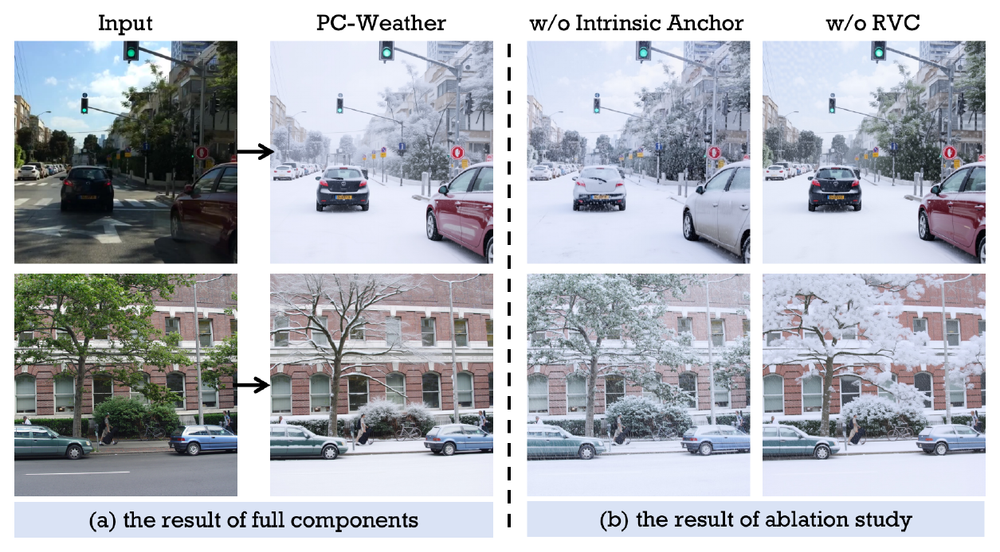
- 移除 IA： 保守的内容保留指标略升，但目标天气完成度下降；定性上会出现车辆颜色漂移，或把夏季树冠机械涂白而未形成合理冬季状态。
- 移除 RVC： 不同区域的编辑强度失衡，可能残留绿色植被，也可能让积雪团块遮蔽枝干结构。
- 完整模型： IA 稳定材质与结构身份，RVC 决定天气变化应发生在哪里、以多大强度发生。
5. 合成数据对真实恶劣天气检测的作用
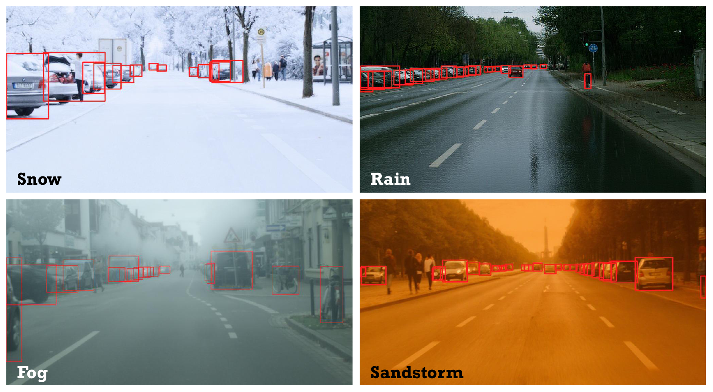
从 Cityscapes 抽取 1,500 张晴天图像，分别转换为雪、雨、雾和沙尘，每种方法得到 6,000 张合成训练图。所有方法沿用同一批源图和同一套由固定检测器产生的车辆伪标签，因此结果同时反映天气逼真度与合成过程中的几何漂移。
实验覆盖 YOLOv10、YOLOv11、YOLOv12 三代模型，并分别采用从头训练的小模型协议和预训练大模型微调协议；所有模型只在合成数据上训练，随后直接测试真实 DAWN 与 ACDC，不使用目标域图像或标注。
表 4：真实恶劣天气测试集上的跨数据集车辆检测
| 训练协议 | 测试集 | 训练数据 | mAP | mAP | Precision | Recall |
|---|---|---|---|---|---|---|
| Scratch | DAWN | Cityscapes-Clear | 0.1138 | 0.2004 | 0.4648 | 0.1745 |
| Scratch | DAWN | ICEdit | 0.2623 | 0.4338 | 0.6924 | 0.3793 |
| Scratch | DAWN | FLUX.1 Kontext | 0.3013 | 0.4809 | 0.7188 | 0.4185 |
| Scratch | DAWN | PC-Weather | 0.3083 | 0.4950 | 0.7196 | 0.4273 |
| Scratch | ACDC | Cityscapes-Clear | 0.1113 | 0.2050 | 0.3789 | 0.3030 |
| Scratch | ACDC | ICEdit | 0.1361 | 0.2506 | 0.4221 | 0.3528 |
| Scratch | ACDC | FLUX.1 Kontext | 0.1667 | 0.2816 | 0.4441 | 0.3793 |
| Scratch | ACDC | PC-Weather | 0.1670 | 0.2858 | 0.4407 | 0.3888 |
| Fine-tuning | DAWN | Cityscapes-Clear | 0.2072 | 0.3326 | 0.6294 | 0.2639 |
| Fine-tuning | DAWN | ICEdit | 0.3048 | 0.4943 | 0.7343 | 0.4425 |
| Fine-tuning | DAWN | FLUX.1 Kontext | 0.3778 | 0.6007 | 0.7562 | 0.5370 |
| Fine-tuning | DAWN | PC-Weather | 0.3826 | 0.6124 | 0.7657 | 0.5430 |
| Fine-tuning | ACDC | Cityscapes-Clear | 0.1728 | 0.2912 | 0.4430 | 0.4115 |
| Fine-tuning | ACDC | ICEdit | 0.1627 | 0.2840 | 0.4491 | 0.3929 |
| Fine-tuning | ACDC | FLUX.1 Kontext | 0.2105 | 0.3373 | 0.4794 | 0.4582 |
| Fine-tuning | ACDC | PC-Weather | 0.2190 | 0.3481 | 0.4877 | 0.4672 |
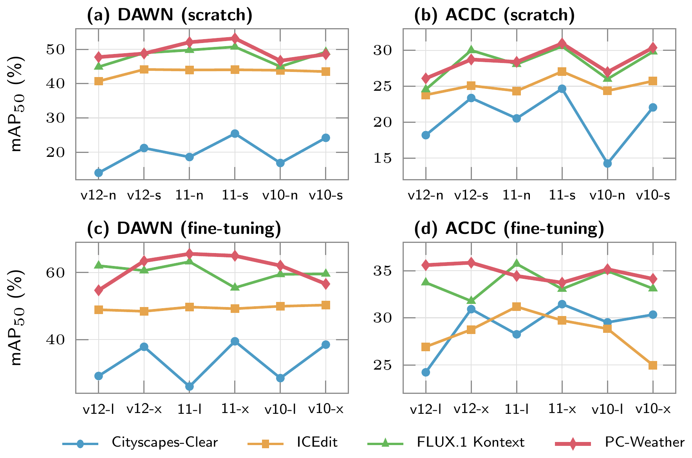
- 从头训练： PC-Weather 在 DAWN 达到 0.3083 mAP / 0.4950 mAP，在 ACDC 达到 0.1670 / 0.2858，两个测试集的平均 AP 均最高。
- 预训练微调： PC-Weather 在 DAWN 达到 0.3826 / 0.6124，在 ACDC 达到 0.2190 / 0.3481，并在两个数据集的 Precision、Recall 和 AP 上取得最优平均结果。
- 跨配置稳定性： 24 个“检测器—数据集”配置中，PC-Weather 在 18 个配置上取得最高 mAP。全部配置平均达到 0.2692 mAP 和 0.4354 mAP，相对 FLUX.1 Kontext 分别提升 1.96% 和 2.40%。
这说明 PC-Weather 不只是让图像看起来更像恶劣天气，还保留了能够迁移到真实恶劣天气检测的标签相关结构。
局限
- 反照率锚定和区域指令只能鼓励物理合理性，尚未显式约束三维几何与大气传播，因此不能严格保证浓雾等深度相关效果。
- 当前验证集中在单张交通图像与车辆检测，尚未验证视频时序一致性、更多下游任务或更广泛场景。
项目贡献总结
- 将街景天气编辑定义为区域相关的保留—重建平衡问题。
- 提出反照率驱动的 Intrinsic Anchoring，减少源天气照明对材质保留的干扰。
- 提出 Region-Aware Velocity Composition，在统一全局轨迹上组合语义区域的天气速度残差。
- 通过自动指标、用户研究和真实恶劣天气车辆检测，验证编辑质量与合成数据实用性。
完整论文
PC-Weather: Preserve-and-Compose Weather Editing via Intrinsic Anchoring and Region-Aware Velocity Composition
Chi Zhang, Zhiwen Hu, Meng Yuan, Yuchen Li
为避免部分浏览器无法加载内嵌 PDF，下面同时提供完整 10 页的逐页阅读版本。原始 PDF 仍可通过上方按钮打开或下载。
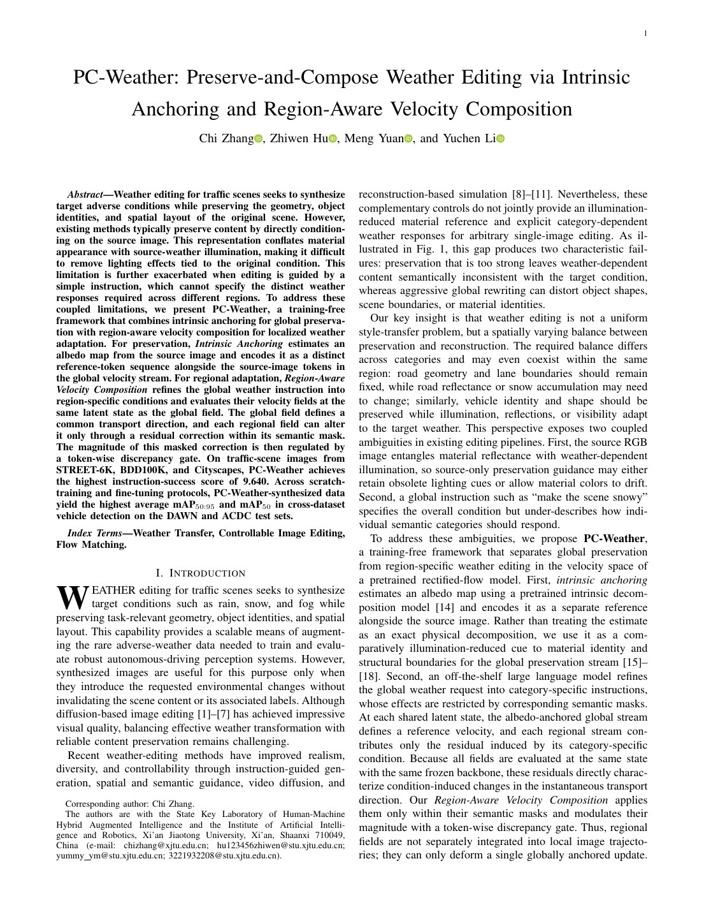
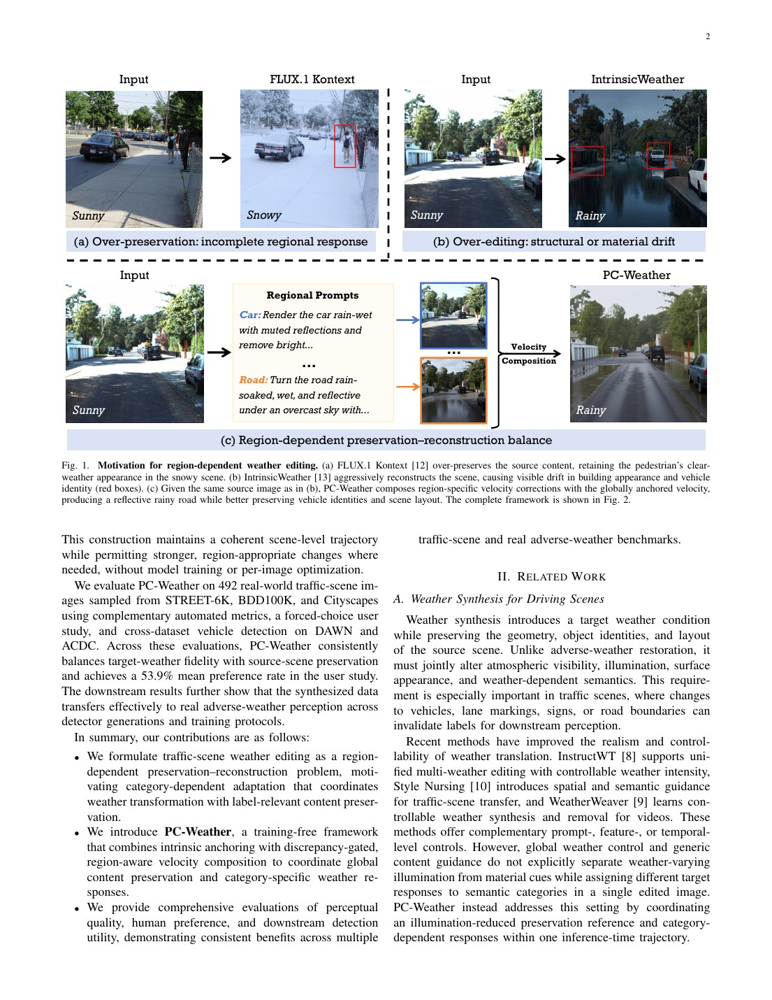
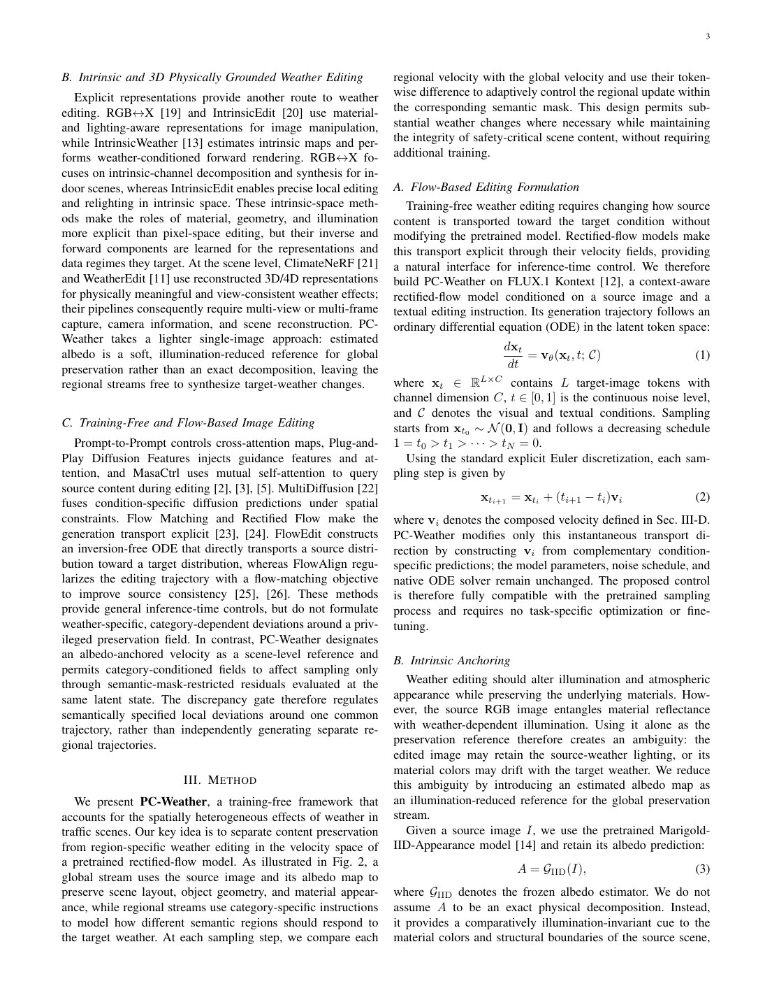
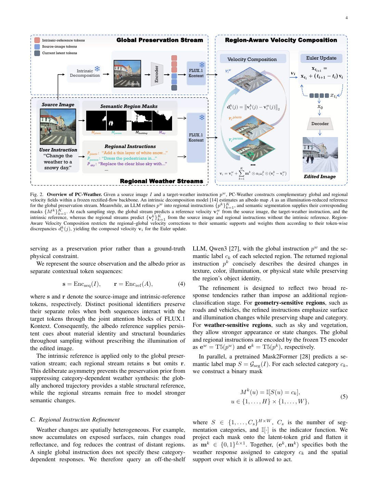
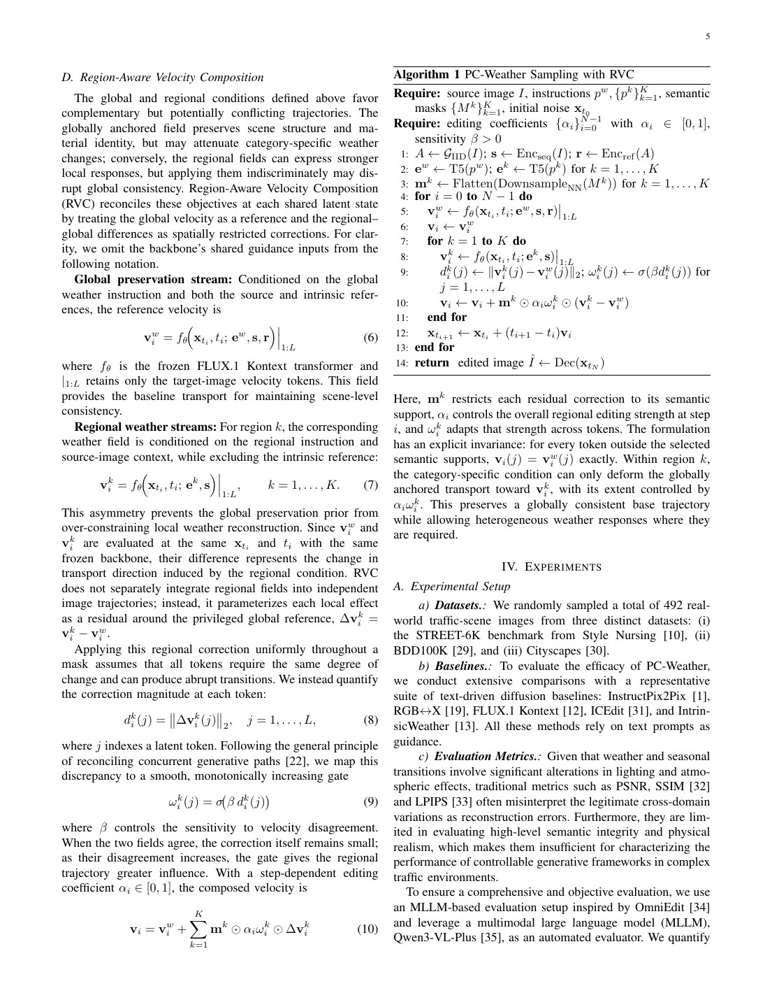
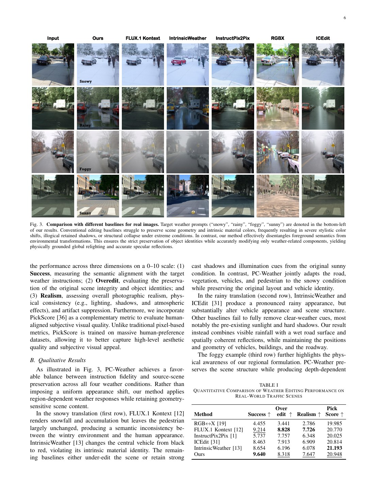
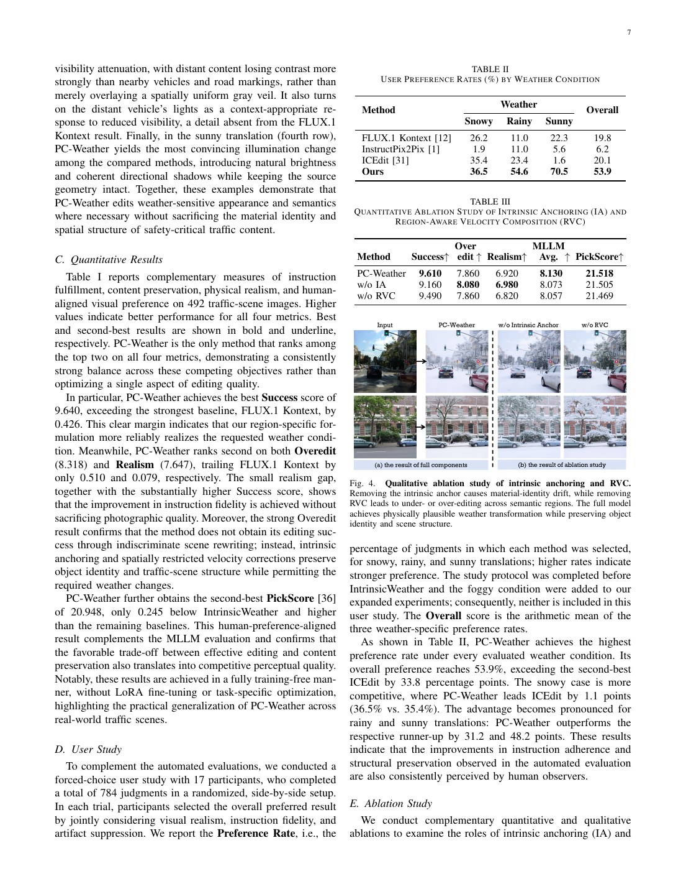
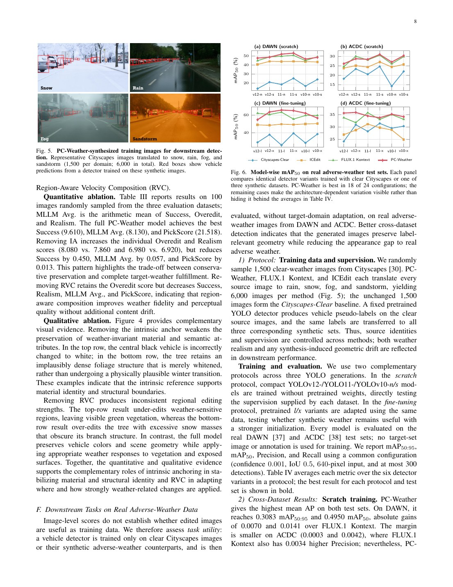
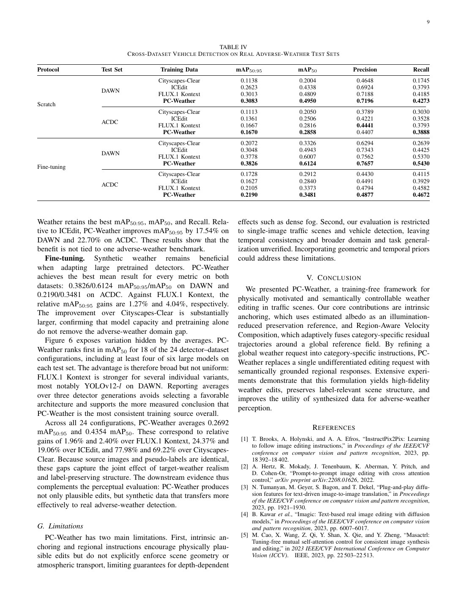
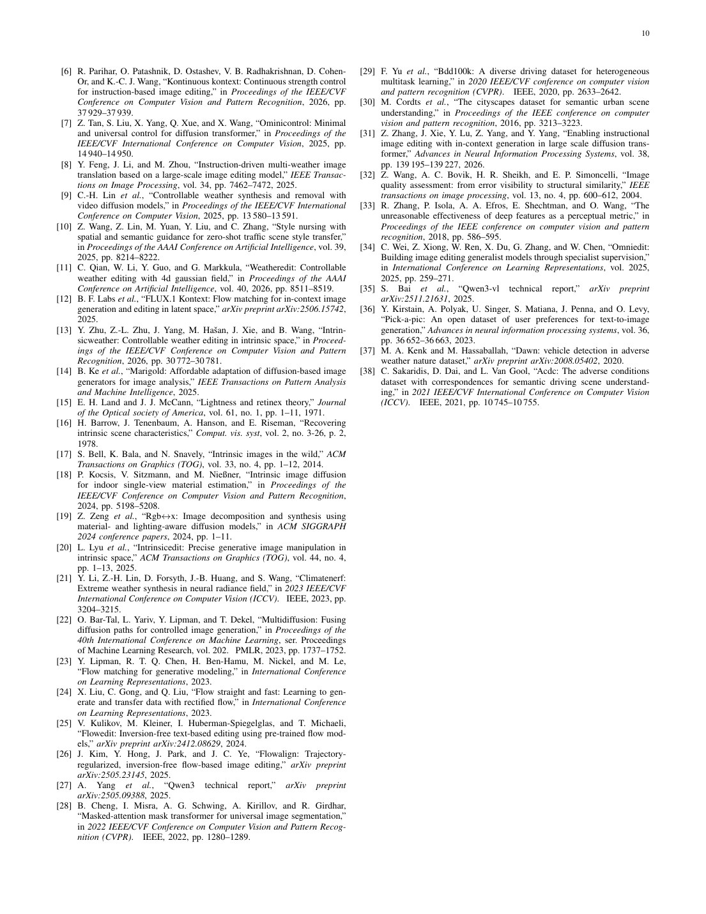